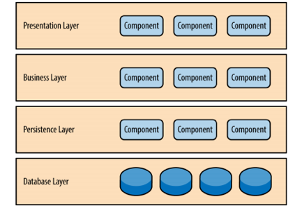
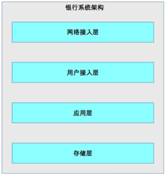
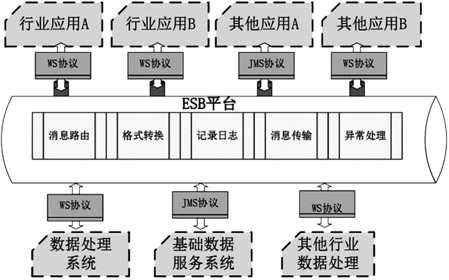

32-传统的可扩展架构模式：分层架构和SOA
分层架构
分层架构也叫N层架构，是一种常见的架构。通常情况下，N一般大于等于2，比如C/S架构，B/S架构。常见的是三层架构(MVC、MVP)架构，四层架构，五层架构比较少，一般复杂的系统才会用到。
C/S、B/S架构
划分的对象是整个业务系统，划分的维度是用户交互，即将和用户交互的部分独立成一层，支撑用户交互的后台作为一层。下图是典型的C/S架构。

MVC架构、MVP架构
划分的对象是整个业务系统、划分的维度是职责，将不同的职责划分为不同的层，但各层的依赖关系比较灵活。
逻辑分层架构
划分的对象是单个业务子系统，也可以是整个系统，划分的维度也是职责。逻辑分层架构与MVC、MVP架构的不同点在于，逻辑分层架构中的层是自顶向下依赖的。典型的有操作系统的内核架构、TCP/IP架构。
典型的J2EE架构也是逻辑分层架构：

针对整个业务系统进行逻辑分层的架构如下图：

无论采用何种分层维度，分层架构的最核心一点就是需要保证各层之间的差异要足够的清晰，边界足够明显，让人看到架构图后就能够看懂整个架构，这也是不能分层太多的原因。如果分层不够清晰，就会出现程序员A觉得功能应该放在A层，而程序员B觉得功能应该放在B层，这样分层就出现了混乱。如果这样的架构进入实际的开发中，就会很乱，就失去了分层的意义。
分层架构能够很好的支撑系统扩展，本质在于隔离了关注点，即每个层的组件只处理本层的逻辑。比如：展示层只需要处理展示逻辑，业务层只需要处理业务逻辑，这样我们在扩展某层时，其它层不受影响，通过这种方式可以支撑系统在某层上的快速扩展。
当然，并不是说简单的分层就一定能够实现隔离关注点，而实现快速的扩展，分层要保证层与层之间的依赖是稳定的，才能真正支撑快速发展。
分层的另一个特点是层层传递，也就是层一旦确定，整个业务流程是按照层进行依次传递的，不能在层之间跳跃。分层的这种约束，好处在于强制将分层依赖限定为两两依赖，降低了整个系统的复杂度。
分层架构的代价就是冗余，即使是一个最简单的功能，也要穿过所有的层。是否可以为了避免冗余，而自由的穿层呢，建议是不这样做，因为这样做，时间长了会带来架构的复杂度。并且分层架构的冗余，也是很小的冗余，花费很少时间即可以实现。
分层架构的另一个代价就是性能，因为每一次操作都需要穿过所有的层，其实有一些层是不需要的，这会带来一定的性能损耗。但在现在硬件和网络快速发展的情况下，在实际应用中，这点损耗是可以忽略不记的。
SOA
SOA英文全称：Service Oriented Architecture，中文称作面向服务的架构。
SOA出现的背景：
企业各部门有独立的IT系统，比如人力资源管理系统、财务系统、销售系统，各系统都有人员管理，各IT系统需要重复开发人员管理模块。当员工离职时，需要去三个系统中删除员工权限。
各个独立的IT系统可能采购于不同的供应商，实现技术也不一样，企业不太可能基于这些系统进行重构。
随着业务的发展，复杂度越来越高，更多的流程和业务需要多个业务系统配合完成。由于各个系统采用不同的标准实现，没有标准的实现方式。每次开发新的流程和业务，需要协调大量的IT成本，同时定制开发，效率很低。
为了应对这些总量，SOA提出了三个关键的概念：
服务
所有的业务功能都是一项服务，服务意味着要对外提供开放的能力，当其它系统需要这项功能时，无须定制化开发。
服务可大可小，可复杂可简单。例如人力资源管理可以定义为服务，包含人员信息管理、请假管理等。而人员基本信息管理也可以定义成一项服务。需要根据企业的实际情况来划分服务。
ESB
ESB翻译为“企业服务总线”。ESB将企业的各个服务连接在一起。因为各个服务是异构的，如果没有统一的标准，则各个异构系统对外提供的接口是各式各样的。SOA用ESB来屏蔽异构系统对外提供各种不同的接口方式，以此来达到服务间高效的互联互通。
松耦合
松耦合的目的是减少各个服务间的依赖和互相影响。因为采用SOA架构后，各个服务是相互独立运行的。甚至不清某个服务有多少个依赖于它的服务。如果做不到松耦合，某个服务一升级，依赖于它的服务全部故障，这肯定是无法满足业务的需要的。
典型的SOA架构：

SOA架构是比较高层的架构设计理念。一般来说会话某个企业采用了SOA架构，但不会说某个独立的系统采用了SOA架构。
SOA解决了传统IT系统重复建设和扩展效率低下的问题，但是带来了新的复杂度。SOA最广为让人诟病的就是ESB，ESB需要实现与各种系统间的协议转换，数据转换，透明的动态路由等功能。
ESB虽然功能强大，但是实际中的协议类型有很多种，如JMS、WS、HTTP、RPC协议等，数据格式也有很多种，如XML，JSON，二进制，HTML等，ESB要完成这么多的协议和数据格式的互相转换，工作量和复杂度非常高，工作量和复杂度非常高，而这种转换非常耗性能，当ESB承载的消息太多时，ESB本身就会成为系统的瓶颈。
其实，SOA的ESB也是无奈之举。出现SOA之前，企业的异构系统已经存在很多年了，完全重写或者按照统一的标准进行改造的成本非常的大，只能通过ESB方式去适配已经存在的各种异构系统。